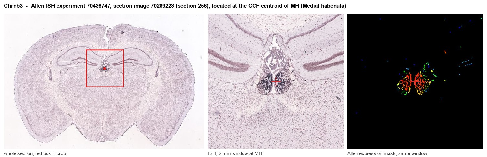

Chrnb3
Neuronal acetylcholine receptor subunit beta-3
Spatial tier: STRICT_EXCLUSIVE · Class: ION_CHANNEL · Top region: MH (Medial habenula) · Positive regions: 10/554
49.7Discovery Score
44.6Targetability Score
CEvidence grade C
What this means: Chrnb3: predicted fine-region profile is strict-exclusive, with 10 positive regions out of 554 (limit 12); direct spatial validation is required.
Function in MH: evidence, prediction, innovation
- Gene function
- Chrnb3 encodes the beta-3 subunit of neuronal nicotinic acetylcholine receptors. Beta-3 is an accessory subunit: it does not form a functional ligand-binding interface itself but occupies the fifth position of the pentamer, most often in alpha6beta3beta2* receptors, where it changes agonist sensitivity, assembly and trafficking.
- Region function
- The medial habenula is an epithalamic relay whose cholinergic/substance P neurons project almost exclusively through the fasciculus retroflexus to the interpeduncular nucleus. This MHb-IPN axis sets nicotine aversion and withdrawal, fear memory expression, anxiety and negative affect.
- Published in this region
- expression only Sheffield et al. 2000 (Neuropharmacology) combined whole-cell recording with single-cell RT-PCR in acutely isolated rat MHb neurons and found beta3 transcript in roughly 40% of cells, in contrast to alpha3, alpha4, alpha5, beta2 and beta4 which were present in nearly all cells. Shih et al. 2014 (J Neurosci) confirmed with subunit-GFP knock-in mice that beta3, along with alpha6 and beta2, is restricted to some but not all subregions of ventral MHb. No study has tested beta3 function in the habenula.
- Predicted function
- Prediction: beta3 marks a minority alpha6beta3beta2* nicotinic population in a circumscribed part of ventral MHb and should tune the agonist sensitivity of that subpopulation rather than carry bulk nicotinic current. Chrnb3 deletion is predicted to leave overall nicotine-evoked MHb currents intact but to shift the low-dose end of the nicotine dose-response curve, selectively altering sensitivity to low nicotine concentrations and to alpha6-targeted ligands, with little effect on somatic withdrawal.
- Innovation
- ★★★★☆ 4/5 Beta-3 is well characterised in midbrain dopamine neurons but its MHb subpopulation has only ever been described anatomically, never manipulated.
- Tools
- Chrnb3 knockout mice; beta3-GFP subunit knock-in reporter lines (Drenan lab); alpha-conotoxin MII and alpha-conotoxin PIA to probe alpha6beta3* receptors; single-cell RT-PCR and RNAscope probes.
- References
Direct evidence located at the region

Allen ISH experiment 70436747, section image 70289223 (section 256): the section that contains the CCF centroid of Medial habenula according to the Allen image-to-atlas alignment (reference_to_image), with a 2 mm window around that point. Left: whole section, red box = window. Middle: ISH signal. Right: Allen's expression-mask view of the same window. open this image in the Allen viewer
Look it up yourself: Allen Mouse Brain ISH for Chrnb3Allen reference atlas: MH (structure 483)ABC Atlas MERFISH viewer(in the ABC Atlas choose dataset MERFISH-C57BL6J-638850-CCF, colour cells by gene "Chrnb3" or by parcellation_substructure "MH")All genes confined to MH + 3-D brain
Direct spatial evidence
MERFISH REGION LOCATOR

DIRECT ALLEN ISH

DIRECT ALLEN ISH

Regional expression figure

Predicted WMB × fine-CCF profile; not direct full-transcriptome spatial measurement.
Spatial profile
Evidence and specificity
- Evidence status
- PREDICTED_FINE
- Direct sources
- None; predicted localization only
- Exclusive threshold
- 12 positive regions out of 554
- Spatial specificity
- 0.401
- Top-region fraction
- 0.117
- Filter status
- PASS
Interpretation limits
- Cell-type-to-region projection is imputed expression, not direct spatial measurement.
- Adult reference atlases do not establish stability across age, sex, strain, state, or disease.
- Transcript abundance does not guarantee protein abundance or genetic-tool performance.